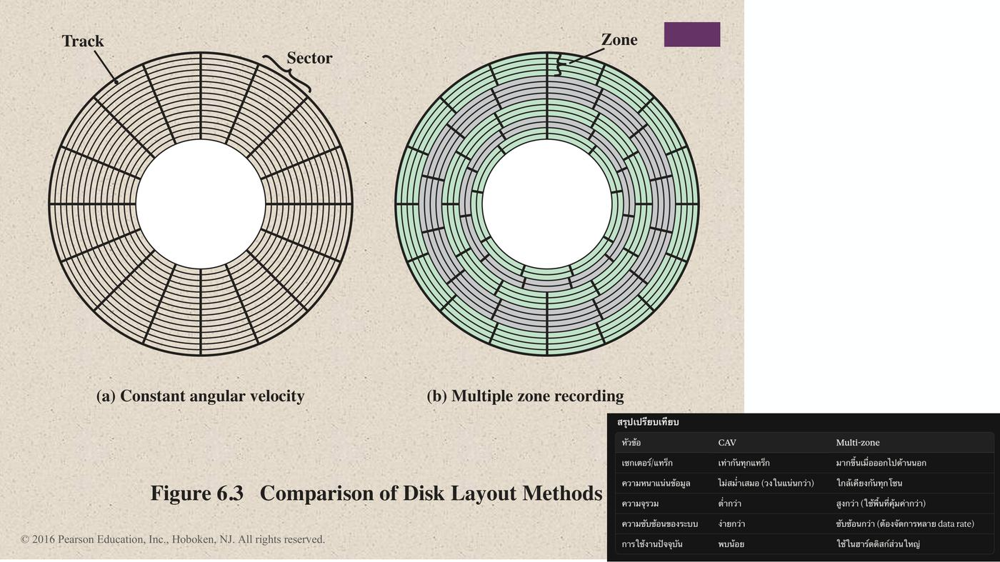
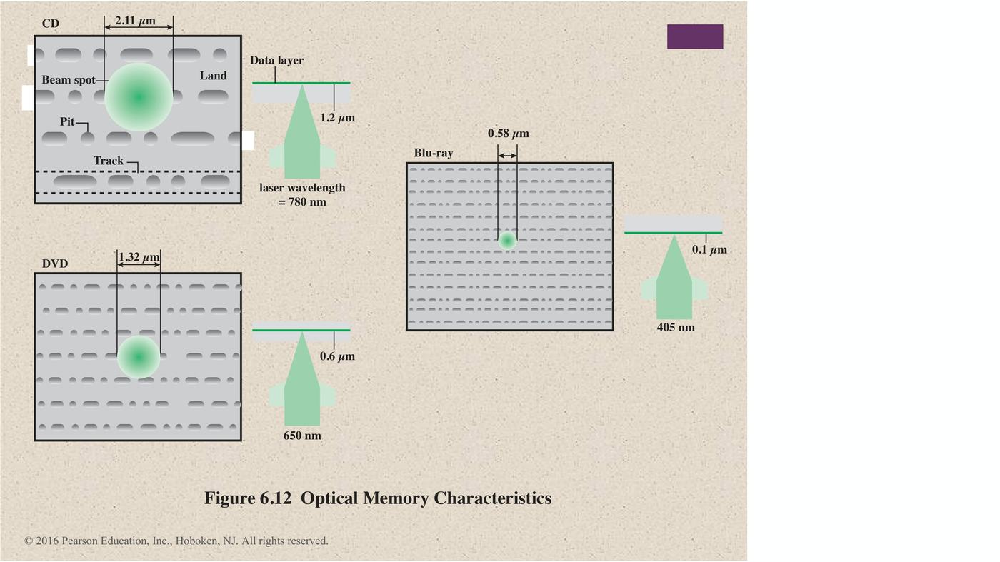

ภาพรวมบทนี้: หน่วยเก็บข้อมูลภายนอกที่อยู่ล่างสุดของ memory hierarchy: Magnetic disk (โครงสร้าง, การอ่านเขียน, รูปแบบข้อมูล, เวลาเข้าถึง), RAID 7 ระดับ (0–6), SSD (เทียบกับ HDD และปัญหาเฉพาะ), Optical memory (CD, DVD, Blu-ray) และ Magnetic tape
จุดที่มักออกสอบคือ RAID แต่ละระดับต่างกันอย่างไร และ ส่วนประกอบของเวลาเข้าถึง disk
1. Course Outline ของบท (สไลด์ 3)
Magnetic Disk • RAID • SSD • Practical Issues • Optical Memory
2. Magnetic Disk (สไลด์ 4–9)
2.1 วัสดุ (สไลด์ 4)
- disk คือ จานกลม (platter) ทำจากวัสดุที่ไม่เป็นแม่เหล็ก เรียกว่า substrate เคลือบด้วยวัสดุที่ทำให้เป็นแม่เหล็กได้
- แบบดั้งเดิม substrate เป็น aluminium หรือ aluminium alloy
- ช่วงหลังเริ่มใช้ glass substrate — ข้อดี:
- ผิว magnetic film สม่ำเสมอขึ้น → disk เชื่อถือได้มากขึ้น
- ข้อบกพร่องบนผิวลดลงมาก → ลด read-write errors
- รองรับ fly height ที่ต่ำลง
- แข็งกว่า (stiffness) → ลด disk dynamics
- ทนแรงกระแทกและความเสียหายได้ดีกว่า
2.2 Read / Write Process (สไลด์ 5–6)
- ทิศทางของอนุภาคแม่เหล็กบนผิวจานแทนค่า "0" และ "1"
| การเขียน (write) | การอ่าน (read) |
|---|---|
| 1. กระแสไฟฟ้าไหลผ่านขดลวด | 1. ทิศทางแม่เหล็กบนผิวจาน |
| 2. เกิดสนามแม่เหล็กจากขดลวด | 2. เหนี่ยวนำสัญญาณไฟฟ้าที่หัวอ่าน |
| 3. จัดเรียงทิศทางบนผิวจาน | 3. แปลงเป็นข้อมูล bit 0 และ 1 |
- Figure 6.1 Inductive Write / Magnetoresistive Read Head: หัวเขียนเป็น inductive write element (ใช้ write current), หัวอ่านเป็น MR (magnetoresistive) sensor (ใช้ read current), มี shield คั่น, บันทึกบน recording medium ตามความกว้าง track (track width)
2.3 Disk Data Layout (สไลด์ 7)
- Platter หลายแผ่นซ้อนบน spindle หมุน (rotation)
- Read-write head 1 หัวต่อ 1 surface ติดบน boom ที่ขยับได้ (direction of arm motion)
- ผิวจานแบ่งเป็น track (วงซ้อน) คั่นด้วย inter-track gap
- แต่ละ track แบ่งเป็น sector (S1, S2, … SN) คั่นด้วย inter-sector gap
- track ที่ตำแหน่งเดียวกันทุก platter รวมกันเป็น cylinder
2.4 Comparison of Disk Layout Methods (สไลด์ 8)
| หัวข้อ | (a) CAV (Constant angular velocity) | (b) Multi-zone recording |
|---|---|---|
| เซกเตอร์/แทร็ก | เท่ากันทุกแทร็ก | มากขึ้นเมื่อออกไปด้านนอก |
| ความหนาแน่นข้อมูล | ไม่สม่ำเสมอ (วงในแน่นกว่า) | ใกล้เคียงกันทุกโซน |
| ความจุรวม | ต่ำกว่า | สูงกว่า (ใช้พื้นที่คุ้มค่ากว่า) |
| ความซับซ้อนของระบบ | ง่ายกว่า | ซับซ้อนกว่า (ต้องจัดการหลาย data rate) |
| การใช้งานปัจจุบัน | พบน้อย | ใช้ในฮาร์ดดิสก์ส่วนใหญ่ |

2.5 Winchester Disk Format — Seagate ST506 (สไลด์ 9)
- 1 track มี 30 physical sectors (0–29), 600 bytes/sector
- แต่ละ sector: Gap 1 (17 bytes) | ID field (7) | Gap 2 (41) | Data field (515) | Gap 3 (20) → รวม 600
- ID field (7 bytes): synch byte (1), track # (2), head # (1), sector # (1), CRC (2)
- Data field (515 bytes): synch byte (1), data (512), CRC (2)
- มี index บอกจุดเริ่ม track
3. Physical Characteristics และ Disk Classification (สไลด์ 10–12)
3.1 Table 6.1 Physical Characteristics (สไลด์ 10)
| ลักษณะ | แบบ |
|---|---|
| Head Motion | Fixed head (one per track) / Movable head (one per surface) |
| Disk Portability | Nonremovable disk / Removable disk |
| Sides | Single sided / Double sided |
| Platters | Single platter / Multiple platter |
| Head Mechanism | Contact (floppy) / Fixed gap / Aerodynamic gap (Winchester) |
3.2 Characteristics (สไลด์ 11)
- Fixed-head disk: 1 หัวต่อ 1 track, หัวติดบนแขนแข็งที่ยื่นข้ามทุก track
- Movable-head disk: หัวเดียว ติดบนแขนที่ยืดหรือหดได้
- Non-removable disk: ติดถาวรใน drive — เช่น hard disk ใน PC
- Removable disk: ถอดเปลี่ยนได้ — ข้อดี: มีข้อมูลได้ไม่จำกัดด้วยระบบ disk จำนวนจำกัด, ย้าย disk ไปเครื่องอื่นได้ — ตัวอย่าง: floppy disk, ZIP cartridge
- Double sided disk: เคลือบสารแม่เหล็กทั้งสองด้านของ platter
3.3 Disk Classification ตาม Head Mechanism (สไลด์ 12)
- หัวต้องสร้างหรือรับรู้สนามแม่เหล็กที่แรงพอจะอ่าน/เขียนได้
- หัวยิ่งแคบ ต้องยิ่งอยู่ใกล้ผิวจาน → หัวแคบ = track แคบ = ความหนาแน่นข้อมูลสูง
- แต่ หัวยิ่งใกล้จาน ความเสี่ยงต่อ error จากสิ่งสกปรกหรือตำหนิยิ่งมาก
- Winchester Heads:
- ใช้ใน sealed drive assemblies ที่แทบไม่มีสิ่งปนเปื้อน
- ออกแบบให้ทำงาน ใกล้ผิวจานกว่า หัวของ rigid disk ทั่วไป → ความหนาแน่นสูงกว่า
- จริง ๆ แล้วเป็น aerodynamic foil ที่วางเบา ๆ บนผิวจานตอนจานหยุด
- แรงดันอากาศ จากการหมุนของจานพอจะยกหัวขึ้นเหนือผิว
4. HDD Parameters และ Disk Performance (สไลด์ 13–15)
4.1 Table 6.2 Typical Hard Disk Drive Parameters (สไลด์ 13)
| Seagate Enterprise | Seagate Barracuda XT | Seagate Cheetah NS | Seagate Laptop HDD | |
|---|---|---|---|---|
| Application | Enterprise | Desktop | Network attached storage, application servers | Laptop |
| Capacity | 6 TB | 3 TB | 600 GB | 2 TB |
| Average seek time | 4.16 ms | N/A | 3.9 ms read, 4.2 ms write | 13 ms |
| Spindle speed | 7200 rpm | 7200 rpm | 10,075 rpm | 5400 rpm |
| Average latency | 4.16 ms | 4.16 ms | 2.98 | 5.6 ms |
| Max sustained transfer rate | 216 MB/s | 149 MB/s | 97 MB/s | 300 MB/s |
| Bytes per sector | 512/4096 | 512 | 512 | 4096 |
| Tracks per cylinder (จำนวนผิว platter) | 8 | 10 | 8 | 4 |
| Cache | 128 MB | 64 MB | 16 MB | 8 MB |
4.2 Timing of a Disk I/O Transfer (สไลด์ 14)
Wait for Device → Wait for Channel → Seek → Rotational Delay → Data Transfer
- ช่วง Device Busy = ตั้งแต่ Wait for Channel จนจบ Data Transfer
4.3 Disk Performance Parameters (สไลด์ 15)
- ขณะทำงาน disk หมุนด้วย ความเร็วคงที่
- จะอ่าน/เขียน หัวต้องอยู่ที่ track ที่ต้องการ และที่ จุดเริ่มของ sector ที่ต้องการ
- เลือก track: ขยับหัว (movable-head) หรือเลือกหัวด้วยไฟฟ้า (fixed-head)
- เลือก track แล้ว controller รอจน sector หมุนมาตรงหัว
| Parameter | ความหมาย |
|---|---|
| Seek time | (movable-head) เวลาที่ใช้วางหัวไปที่ track |
| Rotational delay (rotational latency) | เวลาที่จุดเริ่มของ sector หมุนมาถึงหัว |
| Access time | Seek time + Rotational delay = เวลาที่ใช้เข้าตำแหน่งพร้อมอ่าน/เขียน |
| Transfer time | เวลาอ่าน/เขียนขณะ sector เคลื่อนผ่านหัว (ส่วน data transfer) |
⚠️ Access time ไม่รวม transfer time
5. RAID (สไลด์ 16–20)
5.1 หลักการ (สไลด์ 16)
RAID = Redundant Array of Independent Disks — เทคนิคนำ HD หลายตัวมารวมกันทำงานเป็นกลุ่มเดียว
- มี 7 ระดับ (0–6) — ระดับ ไม่ได้หมายถึงลำดับชั้น แต่เป็นสถาปัตยกรรมต่างกันที่มี 3 ลักษณะร่วม:
- ชุด physical disk drives ที่ OS มองเห็นเป็น logical drive เดียว
- ข้อมูลกระจายไปบน physical drives ด้วยวิธี striping
- ใช้ความจุส่วนเกินเก็บ parity เพื่อกู้ข้อมูลได้เมื่อ disk เสีย
5.2 Table 6.3 RAID Levels (สไลด์ 17)
(N = จำนวน data disks; m ∝ log N)
| Category | Level | Description | Disks required | Data availability | Large I/O data transfer capacity | Small I/O request rate |
|---|---|---|---|---|---|---|
| Striping | 0 | Nonredundant | N | ต่ำกว่า single disk | Very high | Very high ทั้ง read และ write |
| Mirroring | 1 | Mirrored | 2N | สูงกว่า RAID 2, 3, 4, 5; ต่ำกว่า RAID 6 | สูงกว่า single disk สำหรับ read; ใกล้ single disk สำหรับ write | ถึง 2 เท่าของ single disk สำหรับ read; ใกล้ single disk สำหรับ write |
| Parallel access | 2 | Redundant via Hamming code | N + m | สูงกว่า single disk มาก; เทียบได้กับ 3, 4, 5 | สูงที่สุด | ราว 2 เท่าของ single disk |
| Parallel access | 3 | Bit-interleaved parity | N + 1 | สูงกว่า single disk มาก; เทียบได้กับ 2, 4, 5 | สูงที่สุด | ราว 2 เท่าของ single disk |
| Independent access | 4 | Block-interleaved parity | N + 1 | สูงกว่า single disk มาก; เทียบได้กับ 2, 3, 5 | ใกล้ RAID 0 สำหรับ read; ต่ำกว่า single disk มากสำหรับ write | ใกล้ RAID 0 สำหรับ read; ต่ำกว่า single disk มากสำหรับ write |
| Independent access | 5 | Block-interleaved distributed parity | N + 1 | สูงกว่า single disk มาก; เทียบได้กับ 2, 3, 4 | ใกล้ RAID 0 สำหรับ read; ต่ำกว่า single disk สำหรับ write | ใกล้ RAID 0 สำหรับ read; โดยทั่วไปต่ำกว่า single disk สำหรับ write |
| Independent access | 6 | Block-interleaved dual distributed parity | N + 2 | สูงที่สุด | ใกล้ RAID 0 สำหรับ read; ต่ำกว่า RAID 5 สำหรับ write | ใกล้ RAID 0 สำหรับ read; ต่ำกว่า RAID 5 มากสำหรับ write |
คำอธิบายภาษาไทยในสไลด์:
- Striping: แบ่งข้อมูลเป็นชิ้นเล็ก ๆ กระจายเขียนลงหลายดิสก์พร้อมกัน
- Mirroring: เขียนข้อมูลชุดเดียวกันซ้ำลงดิสก์สองตัว → ปลอดภัยแต่เปลือง
- Parity: คำนวณค่าตรวจสอบ (parity bit) เก็บแยกไว้ เพื่อใช้กู้คืนข้อมูลหากดิสก์ตัวใดตัวหนึ่งเสีย โดยไม่ต้องสำรองข้อมูลเต็มรูปแบบ
5.3 Figure 6.6 RAID Levels — การวางข้อมูล (สไลด์ 18–19)
| Level | การวาง (ตามภาพ 4 data disks) |
|---|---|
| RAID 0 | strip 0, 1, 2, 3 เรียงไปบน disk 1–4 แล้วต่อด้วย strip 4–7 ฯลฯ |
| RAID 1 | เหมือน RAID 0 แต่มี ชุด mirror ซ้ำอีก 4 disk |
| RAID 2 | bit b0–b3 บน data disks + f0(b), f1(b), f2(b) (Hamming code) บน 3 disks |
| RAID 3 | bit b0–b3 + P(b) บน parity disk เดียว |
| RAID 4 | block 0–3 + P(0-3) บน parity disk ตัวเดียวเสมอ |
| RAID 5 | block + parity หมุนเวียนไปทุก disk (P(0-3), P(4-7), … อยู่คนละ disk) |
| RAID 6 | block + parity 2 ชุด P และ Q กระจายทุก disk |
5.4 Data Mapping for RAID 0 (สไลด์ 20)
Array management software map logical disk (strip 0–15) ไปยัง physical disk 0–3: disk 0 = strip 0, 4, 8, 12 | disk 1 = 1, 5, 9, 13 | disk 2 = 2, 6, 10, 14 | disk 3 = 3, 7, 11, 15
6. RAID แต่ละระดับ (สไลด์ 21–28)
RAID 0 (สไลด์ 21)
RAID 0 for High Data Transfer Capacity — ต้องมี 2 เงื่อนไข:
- ต้องมี transfer capacity สูงตลอดเส้นทางระหว่าง host memory กับ disk drives แต่ละตัว
- application ต้องส่ง I/O request ที่ใช้ disk array ได้อย่างมีประสิทธิภาพ
RAID 0 for High I/O Request Rate:
- ดูที่รูปแบบ request ของ host และการวางข้อมูล (ผลของ redundancy ไม่รบกวนการวิเคราะห์)
- I/O request เล็ก ๆ → เวลาถูกครอบงำด้วย seek time และ rotational latency
- disk array ให้ I/O execution rate สูงได้โดย กระจาย I/O load ไปหลาย disk
- ถ้า strip size ค่อนข้างใหญ่ → request ที่รออยู่หลายตัวทำขนานกันได้ → ลด queuing time
RAID 1 — Mirroring เขียนข้อมูลซ้ำ (สไลด์ 22)
Characteristics:
- ต่างจาก RAID 2–6 ในวิธีสร้าง redundancy — ทำสำเนาข้อมูลทั้งหมด
- ใช้ striping แต่ละ logical strip map ไป 2 physical disks → ทุก disk มี mirror disk ที่มีข้อมูลเหมือนกัน
- ทำแบบไม่มี striping ก็ได้ (พบน้อยกว่า)
Positive aspects:
- read request ให้บริการได้จาก disk ตัวใดก็ได้ ใน 2 ตัว
- ไม่มี "write penalty"
- กู้คืนง่าย — drive เสียก็อ่านจากตัวที่สอง
- ได้สำเนาข้อมูลแบบ real-time
- I/O request rate สูงได้ ถ้า request ส่วนใหญ่เป็น read
- ข้อเสียหลักคือ ราคา
RAID 2 (สไลด์ 23)
Bit-level striping + Hamming code (ECC) เก็บแยกในดิสก์ต่างหาก — ซับซ้อนที่สุด และแทบไม่มีใช้งานจริงในปัจจุบัน
- ใช้ parallel access: ทุก disk ร่วมทำทุก I/O request
- spindles ของทุก drive synchronized → หัวทุก disk อยู่ตำแหน่งเดียวกันเสมอ
- strip เล็กมาก มักเท่า 1 byte หรือ 1 word
- คำนวณ error-correcting code ข้าม bit ที่ตรงกันของทุก data disk แล้วเก็บใน หลาย parity disks
- มักใช้ Hamming code — แก้ error 1 bit, ตรวจจับ error 2 bit
- จำนวน redundant disks ∝ log ของจำนวน data disks
- เหมาะเฉพาะสภาพแวดล้อมที่ disk error เกิดบ่อย
RAID 3 (สไลด์ 24)
Byte-level striping + parity ดิสก์เดียว
- ใช้ redundant disk แค่ 1 ตัว ไม่ว่า array ใหญ่แค่ไหน
- parallel access, data กระจายเป็น strip เล็ก
- ใช้ parity bit ธรรมดา คำนวณจาก bit ตำแหน่งเดียวกันในทุก data disk (แทน ECC)
- Redundancy: drive เสีย → อ่าน parity drive แล้วสร้างข้อมูลจาก devices ที่เหลือ; เปลี่ยน drive แล้วกู้ข้อมูลลง drive ใหม่ได้
- Performance:
- transfer rate สูงมาก
- เมื่อ disk เสีย ข้อมูลยังใช้ได้ใน reduced mode
- จะกลับ full operation ต้องเปลี่ยน disk และสร้างข้อมูลทั้งหมดใหม่
- ใน transaction-oriented environment performance แย่
RAID 4 (สไลด์ 25)
Block-level striping + parity disk แยกต่างหากเพียง 1 ตัว → parity disk เป็นคอขวด → RAID 5 จึงมาแก้ปัญหา
- ใช้ independent access: แต่ละ disk ทำงานอิสระ → request ต่างกันทำขนานกันได้
- strip ค่อนข้างใหญ่
- Write penalty เมื่อเขียนข้อมูลขนาดเล็ก:
- ทุกครั้งที่เขียน ต้อง update ทั้ง user data และ parity
- คำนวณ parity ใหม่ต้องอ่าน old user strip และ old parity strip
- → การเขียน 1 strip = 2 reads + 2 writes
RAID 5 (สไลด์ 26)
Block-level striping + parity หมุนเวียน
- จัดคล้าย RAID 4
- ต่างกันที่ กระจาย parity strips ไปทุก disk — มักใช้แบบ round-robin
- การกระจาย parity หลีกเลี่ยงคอขวด I/O ที่เกิดใน RAID 4
RAID 6 (สไลด์ 26)
เหมือน RAID 5 แต่ parity 2 ชุด
- คำนวณ parity 2 แบบ เก็บในคนละ block บนคนละ disk
- ข้อดี: data availability สูงมาก — ต้องมี 3 disks เสียภายในช่วง MTTR ข้อมูลจึงจะหาย
- ข้อเสีย: write penalty มาก เพราะการเขียนแต่ละครั้งกระทบ parity 2 blocks
Table 6.4 RAID Comparison (สไลด์ 27–28)
| Level | Advantages | Disadvantages | Applications |
|---|---|---|---|
| 0 | I/O performance ดีมากจากการกระจาย load ไปหลาย channel และ drive; ไม่มี parity overhead; ออกแบบง่ายมาก; implement ง่าย | disk เสียตัวเดียว ข้อมูลทั้ง array หาย | Video production and editing, image editing, pre-press, งานที่ต้องการ bandwidth สูง |
| 1 | redundancy 100% → ไม่ต้อง rebuild แค่ copy ไป disk ใหม่; บางกรณีทนหลาย drive เสียพร้อมกันได้; ระบบ RAID ที่ง่ายที่สุด | disk overhead สูงที่สุด (100%) — ไม่คุ้ม | Accounting, payroll, financial, งานที่ต้องการ availability สูงมาก |
| 2 | transfer rate สูงมาก; ยิ่งต้องการ rate สูง อัตราส่วน data disk ต่อ ECC disk ยิ่งดี; controller ง่ายกว่า RAID 3, 4, 5 | อัตราส่วน ECC disks ต่อ data disks สูงมาก (word เล็ก) — ไม่คุ้ม; ต้นทุนเริ่มต้นสูงมาก | ไม่มีการใช้เชิงพาณิชย์ |
| 3 | read/write transfer rate สูงมาก; disk เสียมีผลน้อย; อัตรา ECC (parity) ต่อ data disks ต่ำ → มีประสิทธิภาพ | transaction rate เท่า single disk อย่างดีที่สุด (ถ้า spindles synchronized); controller ซับซ้อนพอควร | Video production and live streaming, image editing, video editing, prepress, งานที่ต้องการ throughput สูง |
| 4 | read transaction rate สูงมาก; อัตรา parity disks ต่อ data disks ต่ำ | controller ซับซ้อน; write transaction rate และ write aggregate transfer rate แย่ที่สุด; rebuild ยากและไม่มีประสิทธิภาพ | ไม่มีการใช้เชิงพาณิชย์ |
| 5 | read transaction rate สูงที่สุด; อัตรา parity ต่อ data ต่ำ; aggregate transfer rate ดี | controller ซับซ้อนที่สุด; rebuild ยากเมื่อ disk เสีย (เทียบกับ RAID 1) | File and application servers, database servers, web/e-mail/news servers, intranet servers — RAID ที่ใช้ได้หลากหลายที่สุด |
| 6 | fault tolerance สูงมาก ทนหลาย drive เสียพร้อมกันได้ | controller ซับซ้อนกว่า; overhead ในการคำนวณ parity address สูงมาก | งาน mission critical |
7. SSD — Solid State Drive (สไลด์ 29–32)
7.1 SSD เทียบกับ HDD (สไลด์ 29)
ข้อดีของ SSD:
- IOPS (input/output operations per second) สูง
- ทนทาน (durability)
- อายุการใช้งานยาวกว่า
- ใช้พลังงานน้อยกว่า
- เงียบกว่าและเย็นกว่า
- access time และ latency ต่ำกว่า
7.2 Table 6.5 SSD vs Disk Drives (สไลด์ 30)
| NAND Flash Drives | Seagate Laptop Internal HDD | |
|---|---|---|
| File copy/write speed | 200–550 Mbps | 50–120 Mbps |
| Power draw / battery life | ใช้ไฟน้อย เฉลี่ย 2–3 W → แบตอยู่ได้นานขึ้น 30+ นาที | ใช้ไฟมาก เฉลี่ย 6–7 W |
| Storage capacity | ปกติไม่เกิน 512 GB (notebook), สูงสุด 1 TB (desktop) | ปกติ ~500 GB สูงสุด 2 TB (notebook), สูงสุด 4 TB (desktop) |
| Cost | ~$0.50/GB (drive 1 TB) | ~$0.15/GB (drive 4 TB) |
7.3 Figure 6.8 SSD Architecture (สไลด์ 31)
- Host system: Operating System Software → File System Software → I/O Driver Software → Interface
- SSD: Interface → Controller → Addressing, Data buffer/cache, Error correction → Flash memory components หลายชุด
7.4 Practical Issues — ปัญหาเฉพาะของ SSD ที่ HDD ไม่มี (สไลด์ 32)
ปัญหาที่ 1: performance ช้าลงเมื่อใช้ไปนาน ๆ เพราะการเขียนต้อง:
- อ่านทั้ง block จาก flash ไปไว้ใน RAM buffer
- ลบ (erase) ทั้ง block ของ flash ก่อนเขียนกลับ
- เขียนทั้ง block จาก buffer กลับไปที่ flash
ปัญหาที่ 2: flash ใช้ไม่ได้หลังเขียนครบจำนวนครั้งหนึ่ง — เทคนิคยืดอายุ:
- ใช้ cache ด้านหน้า flash เพื่อหน่วงและรวม write operations
- wear-leveling algorithms กระจายการเขียนให้ทั่ว block ของ cells
- bad-block management
- flash ส่วนใหญ่ ประเมินอายุที่เหลือของตัวเอง ได้ ทำให้ระบบคาดการณ์ความเสียหายและป้องกันล่วงหน้าได้
8. Optical Memory (สไลด์ 33–40)
8.1 Table 6.6 Optical Disk Products (สไลด์ 33)
| ผลิตภัณฑ์ | ความหมาย |
|---|---|
| CD | Compact Disk — ลบไม่ได้ เก็บเสียง digital, disk 12 cm, เล่นต่อเนื่องได้มากกว่า 60 นาที |
| CD-ROM | Compact Disk Read-Only Memory — ลบไม่ได้ เก็บข้อมูลคอมพิวเตอร์, 12 cm, จุมากกว่า 650 MB |
| CD-R | CD Recordable — ผู้ใช้เขียนได้ ครั้งเดียว |
| CD-RW | CD Rewritable — ลบและเขียนซ้ำได้หลายครั้ง |
| DVD | Digital Versatile Disk — เก็บวิดีโอแบบบีบอัดและข้อมูลจำนวนมาก, ขนาด 8 และ 12 cm, double-sided จุได้ถึง 17 GB, แบบพื้นฐานอ่านอย่างเดียว (DVD-ROM) |
| DVD-R | เขียนได้ครั้งเดียว ใช้ได้แค่แบบด้านเดียว |
| DVD-RW | ลบและเขียนซ้ำได้ ใช้ได้แค่แบบด้านเดียว |
| Blu-Ray DVD | High definition video disk — ความหนาแน่นสูงกว่า DVD มาก ใช้เลเซอร์ 405-nm (blue-violet), 1 layer 1 ด้าน จุ 25 GB |
8.2 CD-ROM (สไลด์ 34–37)
- Audio CD กับ CD-ROM ใช้เทคโนโลยีคล้ายกัน — ต่างที่ CD-ROM player ทนทานกว่าและมีอุปกรณ์แก้ error ให้ข้อมูลถูกต้อง
- การผลิต:
- ขึ้นรูป disk จาก resin เช่น polycarbonate
- ข้อมูล digital ถูกประทับเป็น pits เล็ก ๆ บนผิว — ใช้เลเซอร์ความเข้มสูงสร้าง master disk
- ใช้ master ทำแม่พิมพ์ (die) เพื่อปั๊มสำเนาลง polycarbonate
- เคลือบผิวที่มี pit ด้วยชั้นสะท้อนแสง มักเป็น aluminum หรือ gold
- เคลือบ clear acrylic ทับเพื่อป้องกันฝุ่นและรอยขีดข่วน
- silkscreen label บน acrylic
- Figure 6.9 CD Operation: laser ส่ง/รับผ่าน polycarbonate plastic ไปยังชั้น aluminum ที่มี pit และ land ด้านบนคือ protective acrylic และ label
- Figure 6.10 CD-ROM Block Format (2352 bytes): SYNC 12 bytes (00, FF…FF, 00) | ID 4 bytes (MIN, SEC, Sector, Mode) | Data 2048 bytes | L-ECC (Layered ECC) 288 bytes
- ข้อดีของ CD-ROM: (เหมาะกับแจกจ่ายข้อมูลมากให้ผู้ใช้จำนวนมาก แต่ไม่เหมาะกับงานเฉพาะบุคคลเพราะการเขียนครั้งแรกแพง)
- ผลิตสำเนาจำนวนมากได้ถูก
- ถอดได้ ใช้เก็บ archive ได้
- ข้อเสีย:
- อ่านอย่างเดียว update ไม่ได้
- access time นานกว่า magnetic disk drive มาก
8.3 CD-R และ CD-RW (สไลด์ 38)
| CD-R (CD Recordable) | CD-RW (CD Rewritable) |
|---|---|
| Write-once read-many | เขียนและเขียนทับซ้ำได้ |
| สำหรับงานที่ต้องการสำเนาเดียวหรือไม่กี่ชุด | ใช้ phase change disk — วัสดุที่สะท้อนแสงต่างกันมากใน 2 สถานะ |
| disk ถูกเตรียมให้เขียนได้ครั้งเดียวด้วยเลเซอร์ความเข้มปานกลาง | Amorphous state: โมเลกุลเรียงสุ่ม สะท้อนแสงไม่ดี |
| มี dye layer ที่เปลี่ยนการสะท้อนแสง ถูกกระตุ้นด้วยเลเซอร์ความเข้มสูง | Crystalline state: ผิวเรียบ สะท้อนแสงดี |
| ให้บันทึกถาวรของข้อมูลจำนวนมาก | เลเซอร์เปลี่ยนวัสดุจากสถานะหนึ่งไปอีกสถานะได้ |
| ข้อเสีย: วัสดุ เสื่อมสภาพถาวร ในที่สุด; ข้อดี: เขียนซ้ำได้ |
8.4 CD-ROM vs DVD-ROM (สไลด์ 39)
- (a) CD-ROM — 682 MB: หนา 1.2 mm, ชั้น label → protective layer (acrylic) → reflective layer (aluminum) → polycarbonate substrate; laser โฟกัสที่ pits บน polycarbonate หน้าชั้นสะท้อน
- (b) DVD-ROM double-sided, dual-layer — 17 GB: 2 ด้าน แต่ละด้านมี semireflective layer + fully reflective layer; laser โฟกัสที่ pit ในชั้นเดียว ด้านเดียวต่อครั้ง ต้องกลับ disk เพื่ออ่านอีกด้าน
8.5 Optical Memory Characteristics (สไลด์ 40)
| CD | DVD | Blu-ray | |
|---|---|---|---|
| Laser wavelength | 780 nm | 650 nm | 405 nm |
| ขนาด beam spot (ตามภาพ) | 2.11 µm | 1.32 µm | 0.58 µm |
| ระยะจากผิวถึง data layer (ตามภาพ) | 1.2 µm | 0.6 µm | 0.1 µm |
- ภาพแสดง pit, land, track และ beam spot — ยิ่ง wavelength สั้น beam spot ยิ่งเล็ก และ pit/track ยิ่งถี่

9. Magnetic Tape (สไลด์ 41–43)
9.1 ลักษณะ (สไลด์ 41)
- ใช้เทคนิคอ่าน/บันทึกเหมือน disk
- สื่อเป็น flexible polyester tape เคลือบวัสดุแม่เหล็ก (อนุภาคโลหะในตัวประสาน หรือฟิล์มโลหะเคลือบไอ)
- ข้อมูลจัดเป็น parallel tracks ตามความยาวเทป
- Serial recording: ข้อมูลวางเป็นลำดับ bit ตาม track
- อ่าน/เขียนเป็น block ต่อเนื่องเรียก physical records
- block คั่นด้วย inter-record gaps
9.2 Figure 6.13 (สไลด์ 42)
- (a) Serpentine reading and writing: อ่าน/เขียน track 0 ไปทางหนึ่ง แล้วกลับทิศที่ track 1, track 2 … (ซิกแซก)
- (b) Block layout สำหรับระบบที่อ่าน/เขียน 4 tracks พร้อมกัน: block 1–4 อยู่คนละ track ในตำแหน่งเดียวกัน แล้วต่อ 5–8 ฯลฯ
9.3 Table 6.7 LTO Tape Drives (สไลด์ 43)
| LTO-1 | LTO-2 | LTO-3 | LTO-4 | LTO-5 | LTO-6 | LTO-7 | LTO-8 | |
|---|---|---|---|---|---|---|---|---|
| Release date | 2000 | 2003 | 2005 | 2007 | 2010 | TBA | TBA | TBA |
| Compressed capacity | 200 GB | 400 GB | 800 GB | 1600 GB | 3.2 TB | 8 TB | 16 TB | 32 TB |
| Compressed transfer rate | 40 MB/s | 80 MB/s | 160 MB/s | 240 MB/s | 280 MB/s | 525 MB/s | 788 MB/s | 1.18 GB/s |
| Linear density (bits/mm) | 4880 | 7398 | 9638 | 13250 | 15142 | |||
| Tape tracks | 384 | 512 | 704 | 896 | 1280 | |||
| Tape length | 609 m | 609 m | 680 m | 820 m | 846 m | |||
| Tape width | 1.27 cm | (ทุกรุ่นที่มีข้อมูล 1.27 cm) | ||||||
| Write elements | 8 | 8 | 16 | 16 | 16 | |||
| WORM? | No | No | Yes | Yes | Yes | Yes | Yes | Yes |
| Encryption capable? | No | No | No | Yes | Yes | Yes | Yes | Yes |
| Partitioning? | No | No | No | No | Yes | Yes | Yes | Yes |
10. Summary (สไลด์ 44)
- Magnetic disk: read/write mechanisms, data organization & formatting, physical characteristics, performance parameters
- Solid state drives: SSD vs HDD, SSD organization, practical issues
- Magnetic tape
- RAID level 0–6
- Optical memory: compact disk, digital versatile disk, high-definition optical disks
คำศัพท์สำคัญ
| คำศัพท์ | ความหมาย | จำง่าย ๆ ว่า |
|---|---|---|
| Substrate | วัสดุแผ่นจาน (ไม่เป็นแม่เหล็ก) | aluminium → glass |
| MR sensor | magnetoresistive read head | หัวอ่าน |
| Track / Sector / Cylinder | วงบนจาน / ชิ้นของวง / track เดียวกันทุก platter | |
| CAV | sector ต่อ track เท่ากัน | วงในแน่นกว่า |
| Multiple zone recording | วงนอกมี sector มากกว่า | ใช้ใน HDD ส่วนใหญ่ |
| Winchester head | aerodynamic foil, sealed drive | ลอยด้วยแรงอากาศ |
| Seek time | เวลาเลื่อนหัวไป track | |
| Rotational delay | เวลารอ sector หมุนมา | |
| Access time | seek + rotational delay | ไม่รวม transfer |
| RAID | Redundant Array of Independent Disks | 0–6 |
| Striping | กระจายข้อมูลหลาย disk | RAID 0 |
| Mirroring | เขียนซ้ำ 2 ชุด | RAID 1 |
| Write penalty | เขียน 1 strip = 2 reads + 2 writes | RAID 4/5/6 |
| Reduced mode | ยังใช้ข้อมูลได้ขณะ disk เสีย | RAID 3 |
| IOPS | I/O operations per second | SSD สูง |
| Wear leveling | กระจายการเขียนทั่ว cells | ยืดอายุ SSD |
| Pit / Land | หลุม / พื้นเรียบบน CD | |
| Phase change | amorphous (สะท้อนแย่) ↔ crystalline (สะท้อนดี) | CD-RW |
| Serpentine | อ่านเทปแบบซิกแซกกลับทิศทีละ track | |
| WORM | Write once read many | LTO-3 ขึ้นไป |
สรุปท้ายบท / จุดที่มักออกสอบ
- Glass substrate ดีกว่า aluminium: ผิวสม่ำเสมอ, defect น้อย, fly height ต่ำได้, แข็งกว่า, ทนแรงกระแทก
- เขียน: กระแส → สนามแม่เหล็ก → จัดทิศบนจาน | อ่าน: ทิศแม่เหล็ก → เหนี่ยวนำไฟฟ้า → bit
- CAV (sector เท่ากันทุก track, วงในแน่น, ง่าย, พบน้อย) vs Multi-zone (วงนอก sector มาก, ความจุสูง, ซับซ้อน, ใช้ส่วนใหญ่)
- ST506: 30 sectors × 600 bytes, data 512 bytes ต่อ sector
- หัวแคบ = ความหนาแน่นสูง แต่ต้องใกล้จาน = เสี่ยง error → Winchester (sealed, aerodynamic foil)
- Access time = Seek + Rotational delay | Transfer time แยกต่างหาก | Timing: wait device → wait channel → seek → rotational → transfer
- RAID 3 ลักษณะร่วม: OS เห็นเป็น logical drive เดียว, striping, parity เพื่อกู้ข้อมูล
- RAID: 0 = striping (N, ไม่มี redundancy, เสียตัวเดียวหายหมด) | 1 = mirror (2N, overhead 100%, ไม่มี write penalty) | 2 = bit + Hamming (N+m, ไม่มีใช้จริง) | 3 = byte + parity disk เดียว (N+1, transfer สูง, reduced mode) | 4 = block + parity disk เดียว (N+1, parity disk คอขวด, write = 2R+2W) | 5 = block + parity หมุนเวียน (N+1, หลากหลายที่สุด) | 6 = parity 2 ชุด P+Q (N+2, ต้องเสีย 3 ตัวใน MTTR ถึงหาย, write penalty มาก)
- RAID ที่ "ไม่มีใช้เชิงพาณิชย์" ตามตาราง: 2 และ 4
- SSD: IOPS สูง, ทน, อายุยาว, ประหยัดไฟ, เงียบเย็น, latency ต่ำ | แต่แพงกว่า ($0.50 vs $0.15/GB)
- SSD practical issues: ช้าลงเมื่อใช้นาน (read block → erase → write back) + flash สึก (cache, wear leveling, bad-block management, ประเมินอายุตัวเอง)
- CD-ROM > 650 MB (682 MB ในภาพ), block 2352 bytes (data 2048), DVD double-sided dual-layer 17 GB, Blu-ray 25 GB/layer, laser 780 / 650 / 405 nm
- CD-R = write once (dye layer) | CD-RW = phase change (amorphous ↔ crystalline)
- Tape: polyester, parallel tracks, serial recording, physical records, inter-record gaps, serpentine | LTO-1 200 GB (2000) → LTO-8 32 TB